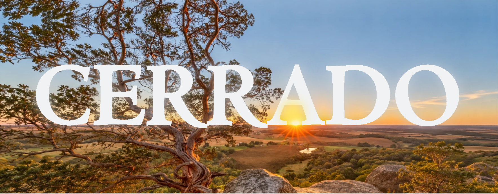

Para saber mais sobre o Cerrado, suas características naturais, biodiversidade e importância ambiental, visite o site oficial do Governo Federal. Lá, você encontrará informações complementares sobre a fauna, a flora, o clima e os desafios relacionados à preservação desse importante bioma brasileiro.
O Cerrado é o segundo maior bioma do Brasil, localizado principalmente na região central do país. É conhecido por sua grande biodiversidade e por apresentar paisagens variadas, com campos abertos, arbustos e árvores de troncos retorcidos. Seu clima é tropical, com duas estações bem definidas: uma chuvosa e outra seca.
O bioma abriga uma grande variedade de animais e plantas, muitos deles adaptados às condições climáticas da região. Além disso, possui grande importância para os recursos hídricos brasileiros, sendo conhecido como o “berço das águas”, pois abriga nascentes de importantes rios. Apesar de sua riqueza natural, o Cerrado sofre com o desmatamento e a expansão agropecuária, o que torna sua preservação fundamental.

Quanto a situção atual o IPAM informa que apesar da melhora nacional, o Cerrado tem sido o bioma mais desmatado do Brasil pelo terceiro ano consecutivo desde 2019, concentrando mais da metade (55%) de toda a área desmatada no país em 2025, embora ocupe em torno de 24% do território nacional. Esses dados mostram o tamanho das mudanças provocadas pela ação humana.
O Instituto Nacional de Pesquisas Espaciais (INPE) registrou 5.516,69 km² de retirada da mata de forma controlada no Cerrado entre 1º de agosto de 2025 e 31 de julho de 2026. O resultado mostrou uma redução de 23,8% em comparado ao período de antes. Maranhão, Tocantins, Piauí e Bahia têm sozinhos 74,3% do desmatamento registrado nesse intervalo.
Entretanto para se proteger a o Cerrado deve ser feita a proteção ambiental, o uso do fogo de forma inteligente e o uso de atividades que não são de extremo impacto no ambiente.
55%
Área Desmatada no País
5.516 km²
Retirada da Mata
74,3%
Do desmatamento estão o Maranhão, Tocantins, Piauí e Bahia
A troca da vegetação por pastagens e áreas de cultivo é uma das principais mudanças Cerrado. O crescimento da agricultura está sendo liderado principalmente no Matopiba, região que chega até partes dos estados do Maranhão, Tocantins, Piauí e na Bahia, e tudo isso pode causa grandes impactos no ambiente se não houver controle.
O desmatamento causa a perda de habitats e a destruição das áreas de vegetação que ainda permanecem preservadas, causando a morte de diversas espécies. Por isso o cerrado é considerado uma região de extrema importância de conservação por reunir muitas espécies únicas e ter fortes ameaças no ambiente. Essas espécies únicas são chamadas de endêmicas, pois elas só existem em apenas uma região.
Dito isso, é de suma importância reconhecer e entender os principais fatores que influenciam o ambiente do Cerrado atualmente, sendo eles respectivamente o fofo, um processo natural paradoxal que tanto pode ajudar quanto prejudicar quando ele atinge espaços específicos, e a retirada vegetal do ambiente que por outro lado traz aspectos negativos ao ambiente por retirar a proteção natural que o ambiente cria ao solo. Por isso o uso deve ser consciente desses processos, pois eles atingem o clima e as populações locais.
+533%
Crescimento da área agrícola em 40 anos
26,2 mi
Hectares agrícolas
49%
Da produção de Soja no Brasil
Teste seus conhecimentos sobre o Cerrado por meio de questões de vestibulares e exames nacionais. Explore perguntas sobre suas características naturais, biodiversidade, importância econômica e desafios ambientais, colocando em prática tudo o que aprendeu sobre esse importante bioma brasileiro.
- Pedro H.N.A - Luís Fellipe - Gustavo Cruz - Gabriel Gutierrez - Marcos Roberto - Murilo Niêto - Ryan Alves - 01DS -